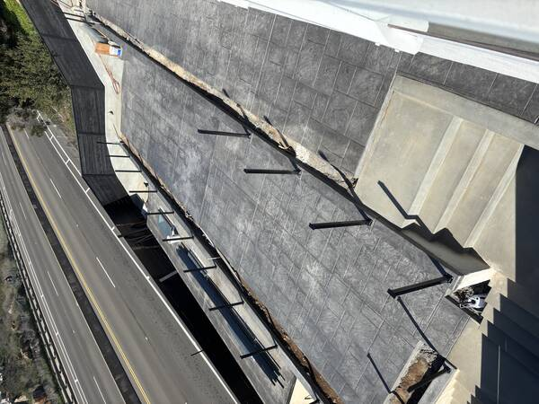

Concrete Staining & Sealing for San Diego Homes
Acid stain, water-based stain, decorative overlays, and protective sealing for patios, driveways, pool decks, and walkways — applied by our own crew to new pours and existing concrete alike.

Color and protection for concrete that lasts.
From a single-color seal to a full acid-stained transformation, we handle concrete finishing in-house. One crew applying and sealing — no handoffs, no inconsistencies.
Acid Staining
Chemical reaction with the concrete itself creates rich, variegated earth tones — walnut, amber, terra cotta, slate blue. Permanent color that bonds at the surface level.
Water-Based Staining
Broader color range and more uniform coverage than acid stain. Ideal for matching a specific palette or applying multiple colors in a pattern or border design.
Concrete Sealing & Coatings
Penetrating and topical sealers that lock out moisture, resist UV fading, and protect against oil, grease, and wear — applied to new pours and existing surfaces.
Decorative Overlays
Thin-set concrete overlays applied over existing slabs to resurface worn concrete, change texture, or prep for staining — without the cost of a full replacement pour.
Exposed Aggregate Sealing
Sealing that enhances the natural stone color in exposed aggregate surfaces, adds slip resistance, and extends the life of the finish in San Diego sun and coastal air.
Color Restoration
Faded stain, chalky sealer, or discolored concrete can often be restored — we assess existing surfaces on-site and recommend the right recolor or reseal approach.
The finish is the first thing people see — and the last thing that wears.
Staining and sealing are often afterthoughts. For us they’re a craft. Done right, a stained and sealed surface holds its color and sheds water for years without needing to be redone.
Works on existing concrete
No need to tear out your slab. Most existing driveways, patios, and pool decks can be stained or resealed if the surface is sound — we assess on-site before recommending any approach.
UV-stable, San Diego-ready
Coastal sun and salt air degrade cheap sealers fast. We use UV-stable formulas selected for San Diego’s specific climate — coatings that hold color and gloss through years of outdoor exposure.
Extends concrete lifespan
A proper sealer prevents water intrusion and surface degradation. Staining and sealing is one of the highest-return investments you can make in existing hardscape.
Transparent pricing from the start
Your estimate is clear before we start. If site conditions require a change order, we communicate it upfront and get your approval before moving forward — no surprises on the final invoice.
Give your concrete a finish worth keeping.
Schedule a free on-site assessment. We’ll look at your existing concrete, show you stain and sealer options, and quote the project before any work begins.
What San Diego homeowners ask before we start.
Built to last. Designed to impress.
From outdoor living spaces and stamped concrete to retaining walls and custom stonework — every project built by our crew, start to finish.
View Recent ProjectsLet’s talk about your concrete staining or sealing project.
No sales pitch. No pressure. A free on-site assessment and quote — that’s it.
Fast response from our local San Diego team — North County, Coastal, Inland, South Bay and everywhere in between.